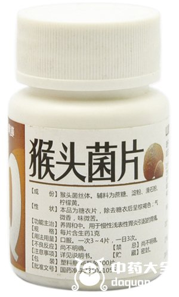
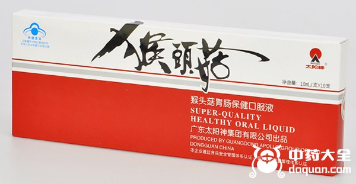
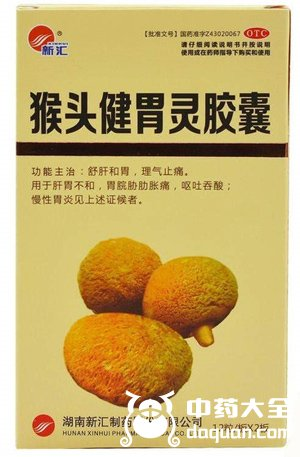
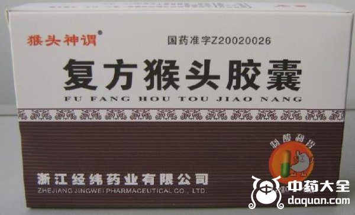
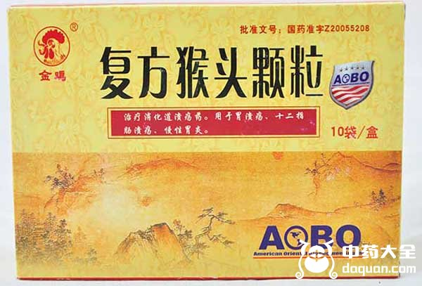

猴头菇，因形似猴头得名，是一种食用菌。它有“素中荤”的美称，与熊掌、鱼翅、海参并称为中国四大名菜。猴头菇营养丰富，有非常多的功效和作用，其一能降低胆固醇和血糖，非常适合心血管疾病患者食用；其二富含蛋白质、矿物质和维生素，能提高人体免疫力；其三含有丰富多糖、多肽类物质，能抑制癌细胞繁殖，起到抗肿瘤的作用；其四能促进脑神经细胞生长和再生，对神经衰弱和预防痴呆有良好的效果；其五，对于养护胃肠道，它有显著的调理、修复和保护功效。除了以食用菌做为菜品食用，猴头菇及其菌体培养物也可以入药，下面介绍几种含猴头菇的药。
1、猴头菌片

猴头菌片的主要成分是猴头菌丝体，有辅助消化的作用，也能有效增强胃黏膜的屏障功能，可以缓解慢性浅表性胃炎引起的胃痛症状，养胃和中。饭前服用，其价格非常低廉，仅2.5元。平时经常会与之弄混的另一个东西，叫猴头菇片。但猴头菇片并不是药物，只是将猴头菇压片或打粉制成咀嚼片，来起到一个日常的开胃效果。市场上出现的一些参差不齐的猴头菇片剂和咀嚼糖果，质量规范不统一，价格也各有高低。
2、猴头菇口服液

猴头菇口服液可以用于胃肠道的日常保养，像因为精神压力大，饮食不规律造成的肠胃不适，它能起到比较好的调养作用。猴头菇口服液也可以作为辅助用药，用于治疗胃炎、胃及十二指肠溃疡。尤其对于胃病复发，猴头菇口服液能起到有效的防治和缓解作用。价格也很平价，大概在20-30元/10支。
3、猴头健胃灵胶囊

猴头健胃灵胶囊的主要成分是猴头菌培养物、海螵蛸、延胡索，对于有胃胀胃痛、反酸呕吐、慢性胃炎症状的患者，猴头健胃灵胶囊能起到止痛作用，调理肝胃不和。可以与奥美拉唑合用，奥美拉唑主要是抑制胃酸分泌，而猴头健胃灵胶囊属于中成药，具有保护胃黏膜的作用。对于肠胃疾病这类易复发疾病，治疗的同时加强修复和抵抗能力是十分有必要的。价格也很平易近人，大概在11元左右。
4、复方猴头胶囊

复方猴头胶囊属于消化科处方药，也是常见的治疗胃病的中成药，主要成分是猴头菇、硫糖铝和三硅酸镁，主要是用于治疗胃及十二指肠溃疡，还有胃炎造成的胃痛反酸症状。饭前半小时服用，一个疗程一般是28天，有极少数患者用药后可能有大便干、口感、恶心、胀气的不良反应。现在市面上复方猴头胶囊好像不多见了，暂时也没有明确的参考价格，而出现比较多的是复方猴头颗粒。
5、复方猴头颗粒

复方猴头颗粒的成分与功效几乎与复方猴头胶囊一致，只不过属于颗粒剂，相比较胶囊剂吞服，需要温水冲泡。每天服药大概4次，饭前半小时，加上睡前半小时一次。服药期间可能会出现一些轻微的不良反应，比如食欲不振、心悸、恶心、胃部不适等症状，症状很轻，一般停药之后就会消失。价格也比较容易接受，大概在25元左右。
结语：猴头菇一方面是中国传统珍贵食材，可以做成美食供大家享用，而另一方面，中医领域认为，猴头菇有健胃的功效，对五脏都有利，有补益之效。现在临床上也有许多研究开始着手于探究它对于老年痴呆、血糖血脂、癌细胞再生方面的功效，未来含猴头菇的药物可能会逐渐增多。